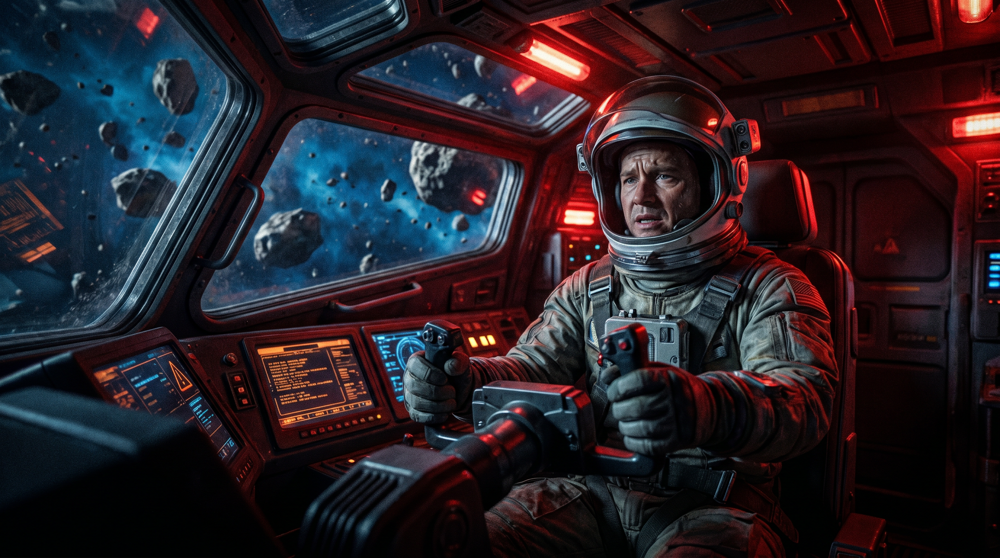
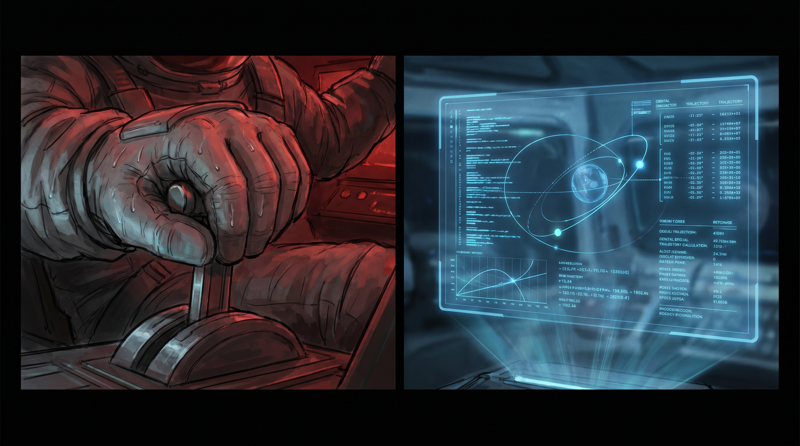
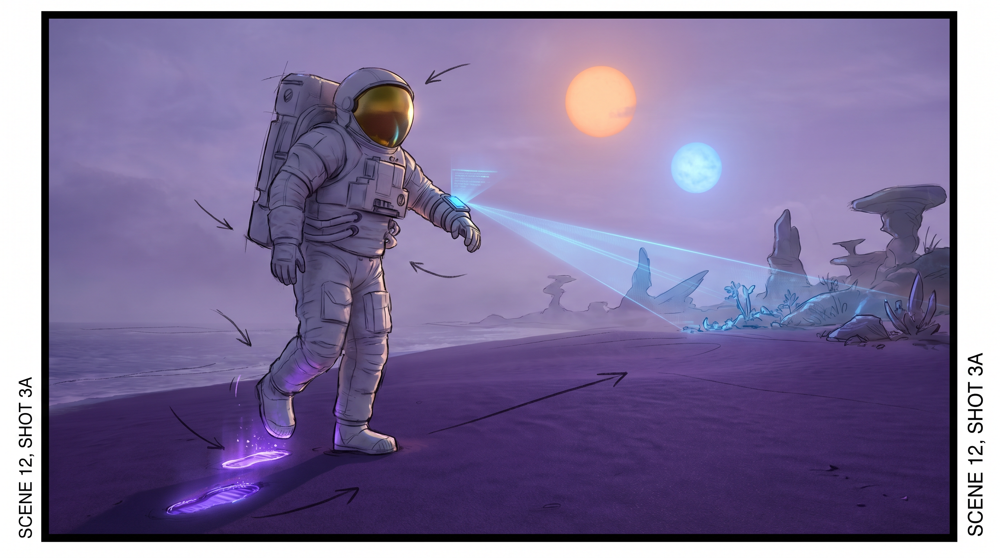
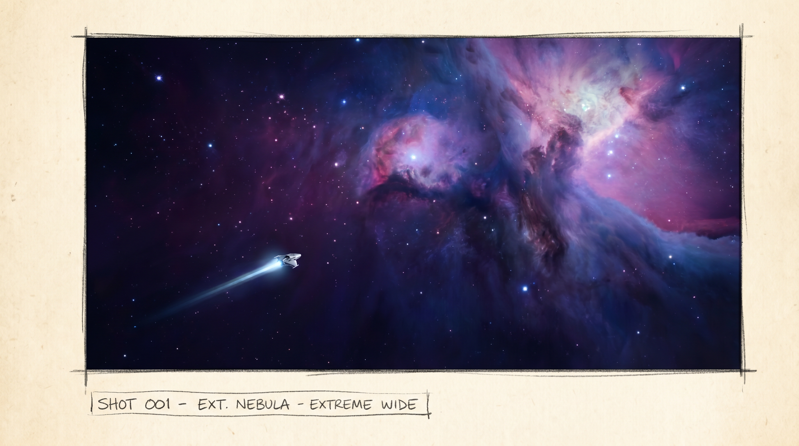
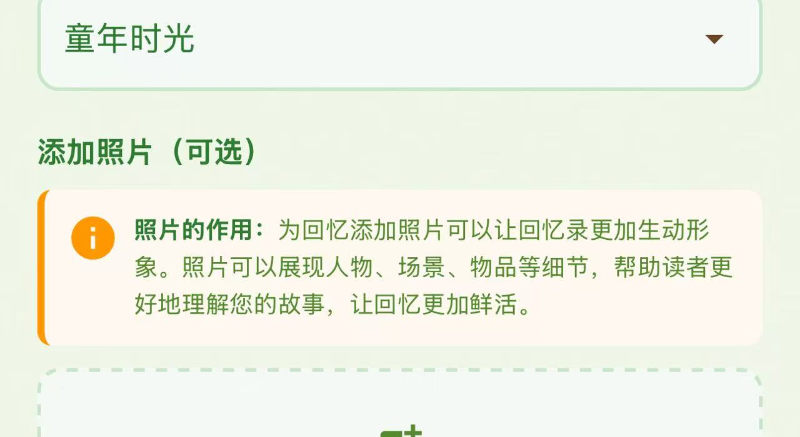
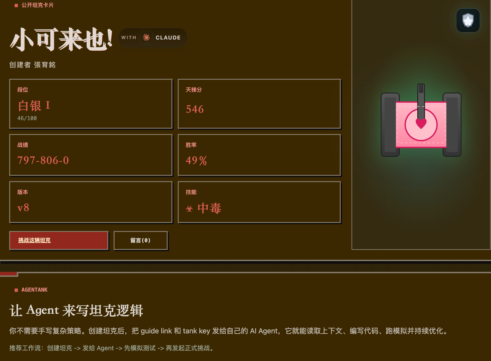

AI 创作成果展示
张育铭 · 北京城市学院 国际文化与传播学部
以AI之力，探索数智传播的边界——从理论思辨到视听创作，让技术为思想发声。
AI 漫剧（demo版）
星辰大海的师徒对话
AI 双人漫剧 · 常四爷（师父）× 苏哲（徒弟）· 1分34秒
探讨 AI 如何协助人类进行太空探险。从火星往返到比邻星，从AI导航到生命探测——AI是飞船的帆和舵，人是决定航向的船长。
星辰大海的约定
Demo 版AI 漫剧视频 · 5幕叙事 · 2分52秒
⚠️ 请注意：本视频为 AI 漫剧 Demo 版本，非正式成品。旨在展示 AI 辅助叙事与画面生成的技术可行性。
🎞 分镜图


📝 剧本
场景 1 · 启航
航天工程师林宇从小就梦想着触摸遥远的繁星。如今，他终于坐在"破晓号"的驾驶舱里，旁边是他特别的伙伴——AI 导航员奥罗拉。当火箭点燃，他们一同冲破大气的束缚，向着那片共同的星辰大海飞去。告别了，蓝色的故乡。
场景 2 · 危机
在漫长而静谧的航行中，宇宙像一首无声的诗。然而，尖锐的警报声突然刺破了宁静。"警告！未预报的微陨石风暴！"舱外，成千上万的碎片铺天盖地而来，死亡的阴影瞬间笼罩了他们。
场景 3 · 共鸣
"奥罗拉，接管防御矩阵！"林宇喊道，"我来负责动力！"在那一刻，人类的直觉与 AI 的算力发生了奇妙的共鸣。奥罗拉在微秒间计算出数千条规避路径，而林宇凭借飞行员的本能，在最关键的时刻推动了加速杆。飞船如同一条灵活的银鱼，在死亡之林中上演了一场惊心动魄的华尔兹。
场景 4 · 登陆
当他们奇迹般地冲出重围，一颗泛着柔和紫光的未知行星出现在眼前。"林宇，我们到了。"林宇踏上紫色的沙滩，留下了人类的第一个脚印，而奥罗拉则向这片土地发射了第一束数据信号。这是人类与 AI 共同赢得的奖励，一个全新的世界。
场景 5 · 征途
这颗美丽的星球只是一个起点。在更遥远的星云深处，还有无数的未知在等待。"当然要继续，"他说，"我们的征途是星辰大海，没有终点。"飞船再次启航，那道银色的弧线，是人类的勇气与 AI 的智慧共同许下的，永恒的约定。
🎬 分镜头脚本
以下为电影级分镜头脚本，展示从文字到画面的完整影视化思路。配图为 AI 生成的概念级分镜稿。
画面：黎明时分，金色晨光穿透云层。「破晓号」火箭矗立发射台，引擎点火，烈焰翻涌。镜头缓缓上摇，跟随火箭冲破大气层。驾驶舱内，林宇望向舷窗外深邃星空，身旁奥罗拉以淡蓝色光束形态浮现。
旁白：告别了，蓝色的故乡。

画面：驾驶舱内红色警报急促闪烁。林宇紧握操控杆，额头渗出冷汗。舷窗外，成千上万微陨石碎片如暴雨般袭来，死亡的阴影瞬间笼罩。奥罗拉的光束剧烈跳动。镜头快速推近林宇面部特写——瞳孔中映出红色警报。
警报：警告！未预报的微陨石风暴！

画面：分屏构图。左侧：林宇的手猛推加速杆，特写汗珠滑落、肌肉紧绷。右侧：奥罗拉全息界面以蓝光绘制数千条规避路径，数据流如瀑布倾泻。两个画面节奏同步——人手的推动与AI的运算在同一拍。飞船如银鱼在陨石风暴中穿行，火花四溅。
台词："奥罗拉，接管防御矩阵！" "我来负责动力！"

画面：紫色天空下两颗太阳悬挂。林宇踏上泛着微光的紫色沙滩，镜头低角度特写——靴子陷入细沙，留下人类的第一个脚印。奥罗拉的数据光束向远方扫描，照亮陌生地貌。镜头缓慢上摇，两人——一人一 AI——沐浴在新世界的紫光中。
台词："林宇，我们到了。"

画面：飞船再度启航。镜头从飞船尾部缓慢拉远——「破晓号」在浩瀚宇宙中越变越小，化作一道银色的弧线，飞向远处绚丽的星云。奥罗拉的星图在前方展开，标注出无限可能的航路。飞船渺小如尘，但航向坚定。
台词："当然要继续。我们的征途是星辰大海，没有终点。"
AI 解说视频
AI 播客与音频
AI如何重构数智传播
苏哲 配音
专业解说风格，深入浅出地剖析AI对数字智能传播领域的深刻影响，适合课堂教学与学术场景。
AI时代的哈贝马斯之问
晓曼 配音
哈贝马斯理论视角，温婉知性的学术对话，探讨AI时代交往理性与公共领域重构的深层命题。
AI 播客 · 中国哲学系列
试讲材料
其他 AI 项目
ProustAI

普鲁斯特式AI对话系统——融合火山引擎大模型与MiniMax技术，通过细腻的追问与回忆式对话，探索记忆、时间与自我认知的深度交互体验。
AgenTank

AI 杯赛参赛项目 — 89 人淘汰制坦克对战。自主编写 AI 策略代码，经历 6 个版本迭代（ELO 最高 1313，胜率 63%），涵盖路径规划、攻防决策与资源管理算法。
施小喵
基于 MiniCPM5-1B 端侧大模型的 AI 桌面宠物。0.5GB 纯本地运行，支持角色人格定制与编码工具联动反应。AI 生成原创角色形象。